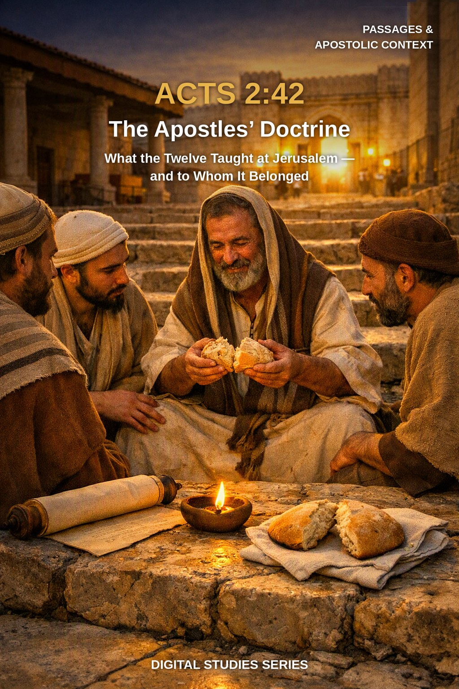
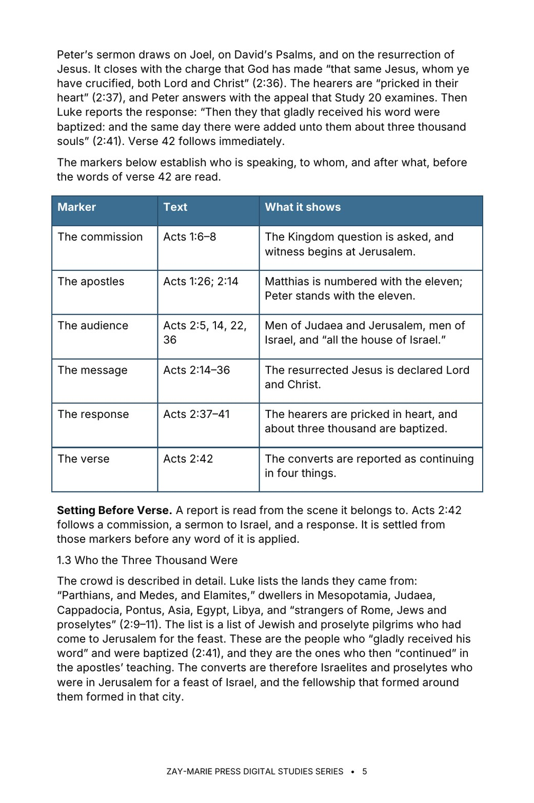

Acts 2:42
The Apostles’ Doctrine
What did the Twelve teach at Jerusalem — and to whom did that teaching belong?
Acts 2:42 is quoted as a list of four essentials: doctrine, fellowship, the breaking of bread, and prayer. Yet the verse is a sentence in a narrative, reporting what particular people did in a particular city immediately after a particular sermon.
This study begins where Luke does: with the commission of Acts 1:8, Peter’s sermon to “all the house of Israel,” and the response. It weighs the four elements of the verse, traces what the apostles actually taught in Acts 2–5, tests the sharing of possessions against Acts 5:4, and only then asks where Paul’s doctrine for the Body stands, holding to one order throughout: meaning first, assignment second, application third.
Read the Verse in Order: Meaning, Assignment, Application
You will read Acts 2:42 as Luke wrote it: after a commission to Israel, a sermon to “all the house of Israel,” and a response of about three thousand. You will weigh the four things the converts continued in, follow the word “doctrine” to Acts 5:28, and trace what the apostles’ recorded teaching in Acts 2–5 contained. You will test the sharing of possessions against the narrative’s own statements, then set the Twelve’s doctrine beside Paul’s before drawing any application.
Readers who already own Study 20 (Understanding Acts 2:38), Study 38 (Why Acts Is Not a Universal Experience Manual), or Study 18 (Peter and Paul: Distinct Apostolic Commissions) will recognize adjoining ground. Study 20 interprets Peter’s appeal and the baptism he commanded; this study begins after that appeal, with what the converts did next. Study 38 sets out the method for deciding when an Acts event becomes a rule; this study applies a method of that kind to a single verse and does not re-derive it. Study 18 compares the two commissions across the whole book; this study asks the narrower question of what the Twelve’s teaching consisted of. The question this study alone answers: what was “the apostles’ doctrine” of Acts 2:42, and to whom did it belong?
How These Studies Relate
Study 65 reads one verse from Acts. The studies below supply the neighboring ground it deliberately does not repeat.
Study 20 — Understanding Acts 2:38 Read Peter’s appeal and baptism to Israel in its setting; Study 65 begins with what the converts did after that appeal.
Study 18 — Peter and Paul: Distinct Apostolic Commissions Compare the two commissions across the book; Study 65 asks what the Twelve’s teaching contained.
Study 38 — Why Acts Is Not a Universal Experience Manual Use the wider test for when an Acts event becomes a present obligation; Study 65 applies a method of that kind to one verse.
Trace the Verse Before You Conclude
The Setting of the Verse
Read Acts 2:42 in its own setting by tracing the audience, the message, and the response recorded in Acts 1:8 and 2:1–41 before interpreting a single phrase of the verse.
Four Things Continued In
Weigh the four things the believers “continued steadfastly” in by following the key words — didachē, koinōnia, the breaking of bread, and the prayers — through their other uses in Acts.
What the Doctrine Contained
Trace what “the apostles’ doctrine” contained by following the apostles’ own recorded teaching in Acts 2–5, including the word “doctrine” in Acts 5:28.
To Whom It Was Addressed
Follow the audiences named across Acts 1:8, 2:5, 2:14, 2:36, and 3:25 to see to whom the teaching was addressed and under what commission.
All Things Common
Test the sharing of possessions in Acts 2:44–45, 4:32–37, and 5:1–11 against what the narrative says was required and what it says was voluntary.
Testing Four Readings
Apply a repeatable discipline for testing four common readings of the verse, and for receiving Scripture’s report of the Jerusalem church without transferring its assignment.
Read the Word in Its Context
Acts 1:6–8
The Kingdom question and the commission that begins at Jerusalem.
Acts 2:14–41
Peter’s sermon to Judaea, Jerusalem, and Israel, and the response of the hearers.
Acts 2:42–47
The converts’ steadfast continuing, the signs, and the daily life at the temple and in houses.
Acts 3:19–26
Peter’s appeal at the temple and the covenant made with the fathers.
Acts 4:32–5:11
The sharing of possessions, Barnabas, and Peter’s word about the property.
Acts 5:26–32
The council’s charge of filling Jerusalem with the apostles’ doctrine, and the apostles’ answer.
Galatians 2:7–9
Paul’s account of the gospel of the circumcision and the gospel of the uncircumcision.
Ephesians 3:1–9
Paul’s stewardship of the mystery, revealed to him.
Narrative, Not Mandate
A verb in the past tense reports what people did.
It becomes an obligation for another group only when Scripture itself assigns it to that group. The verse is read as a report first.
Preview the Study Before You Purchase
Click any page to enlarge it for reading.



The Setting: Pentecost and the Response
Read the commission, the audience, and the response before the verse itself.
A Focused Study of Acts 2:42
17-Page Digital PDF
Approved cover and 16-page numbered interior.
9 Teaching Sections
A text-driven study from the setting of Pentecost to careful application.
Callout Boxes
Five callout boxes marking the study’s key working rules.
Comparison Tables
Setting markers, the four elements of the verse, the apostles’ recorded teaching, and four common readings.
Scripture-Tracing Exercise
Six guided traces through the passages the study relies on.
Guided Further Study
Five passage groups for deeper reading.
Review Questions
Eleven questions testing the study’s markers and method.
Final Synthesis Exercise
A written synthesis drawing the whole study together.
Acts 2:42
17-page digital PDF · For personal use